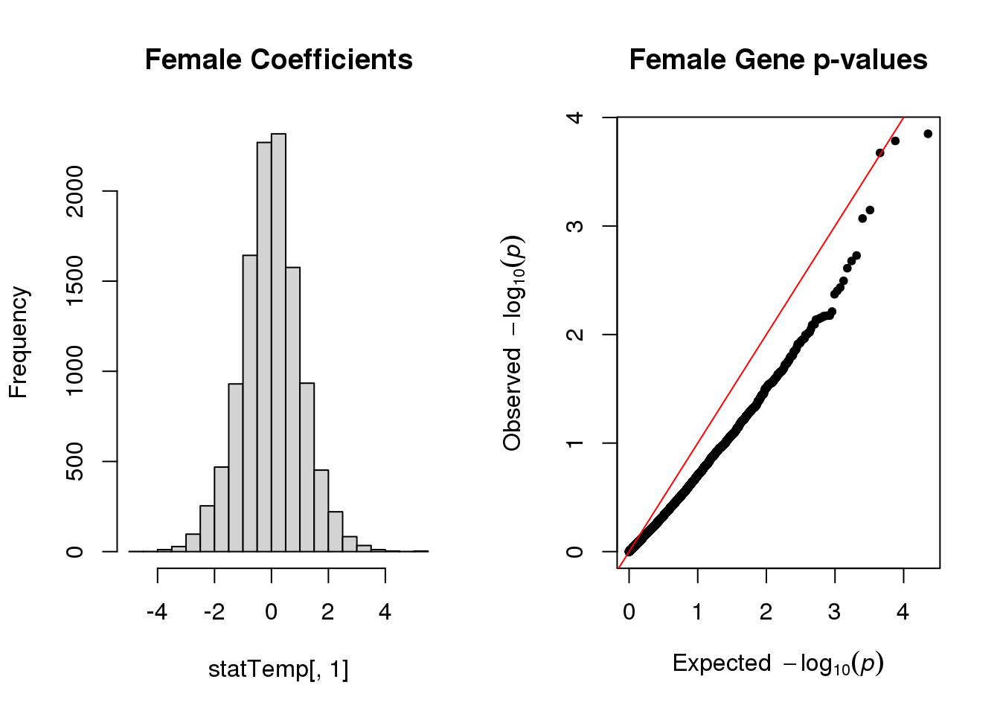
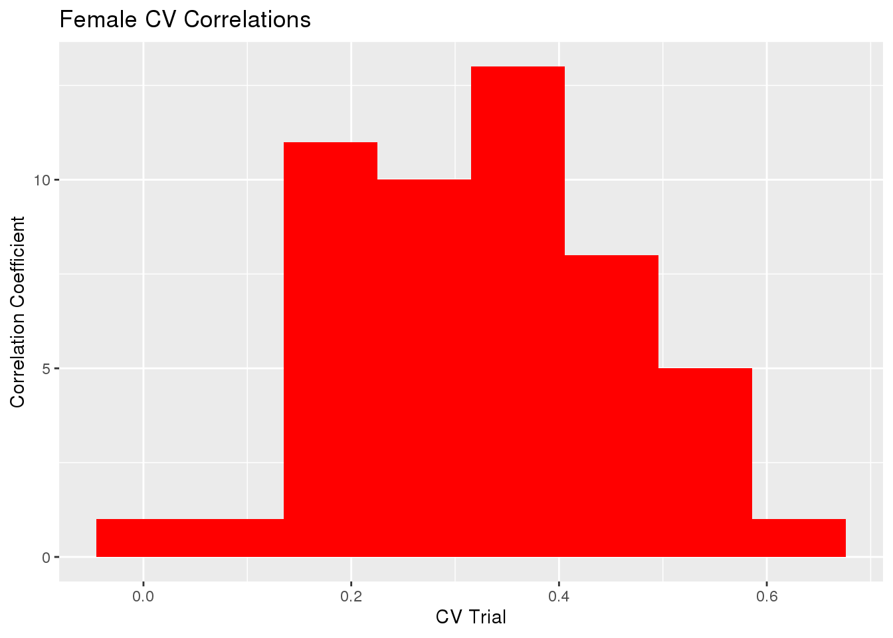

Last updated: 2023-01-22
Checks: 7 0
Knit directory: dgrp-starve/
This reproducible R Markdown analysis was created with workflowr (version 1.7.0). The Checks tab describes the reproducibility checks that were applied when the results were created. The Past versions tab lists the development history.
Great! Since the R Markdown file has been committed to the Git repository, you know the exact version of the code that produced these results.
Great job! The global environment was empty. Objects defined in the global environment can affect the analysis in your R Markdown file in unknown ways. For reproduciblity it’s best to always run the code in an empty environment.
The command set.seed(20221101) was run prior to running
the code in the R Markdown file. Setting a seed ensures that any results
that rely on randomness, e.g. subsampling or permutations, are
reproducible.
Great job! Recording the operating system, R version, and package versions is critical for reproducibility.
Nice! There were no cached chunks for this analysis, so you can be confident that you successfully produced the results during this run.
Great job! Using relative paths to the files within your workflowr project makes it easier to run your code on other machines.
Great! You are using Git for version control. Tracking code development and connecting the code version to the results is critical for reproducibility.
The results in this page were generated with repository version c023f2f. See the Past versions tab to see a history of the changes made to the R Markdown and HTML files.
Note that you need to be careful to ensure that all relevant files for
the analysis have been committed to Git prior to generating the results
(you can use wflow_publish or
wflow_git_commit). workflowr only checks the R Markdown
file, but you know if there are other scripts or data files that it
depends on. Below is the status of the Git repository when the results
were generated:
Ignored files:
Ignored: .RData
Untracked files:
Untracked: analysis/gremlo.R
Untracked: analysis/linearReg.Rmd
Untracked: analysis/rewrite.Rmd
Untracked: code/aaaTest
Untracked: code/analysisSR.R
Untracked: code/geneGO.R
Untracked: code/multiPrep.R
Untracked: code/regress.81916.err
Untracked: code/regress.81916.out
Untracked: code/regress.81918.err
Untracked: code/regress.81918.out
Untracked: code/regress.R
Untracked: code/regress.sbatch
Untracked: code/regressF.81919.err
Untracked: code/regressF.81919.out
Untracked: code/regressF.R
Untracked: code/regressF.sbatch
Untracked: code/regress_f_adj.109973.err
Untracked: code/regress_f_adj.109973.out
Untracked: code/regress_f_adj.109974.err
Untracked: code/regress_f_adj.109974.out
Untracked: code/regress_f_adj.R
Untracked: code/regress_f_adj.sbatch
Untracked: code/regress_m_adj.109971.err
Untracked: code/regress_m_adj.109971.out
Untracked: code/regress_m_adj.109972.err
Untracked: code/regress_m_adj.109972.out
Untracked: code/regress_m_adj.R
Untracked: code/regress_m_adj.sbatch
Untracked: code/snpGene.77509.err
Untracked: code/snpGene.77509.out
Untracked: code/snpGene.77515.err
Untracked: code/snpGene.77515.out
Untracked: code/snpGene.sbatch
Untracked: data/eQTL_traits_females.csv
Untracked: data/eQTL_traits_males.csv
Untracked: data/fMeans.txt
Untracked: data/fRegress.txt
Untracked: data/fRegress_adj.txt
Untracked: data/f_adj.txt
Untracked: data/goGroups.txt
Untracked: data/mMeans.txt
Untracked: data/mPart.txt
Untracked: data/mRegress.txt
Untracked: data/mRegress_adj.txt
Untracked: data/m_adj.txt
Untracked: data/multiReg.rData
Untracked: data/starve-f.txt
Untracked: data/starve-m.txt
Untracked: data/xp-f.txt
Untracked: data/xp-m.txt
Untracked: data/y_save.txt
Untracked: figure/
Untracked: lmm.R
Untracked: qqdum.R
Untracked: scoreAnalysisMulticomp.R
Untracked: temp.Rmd
Unstaged changes:
Deleted: analysis/database.Rmd
Modified: analysis/index.Rmd
Modified: analysis/linReg.Rmd
Modified: analysis/multiComp.Rmd
Modified: analysis/multiReg.Rmd
Modified: analysis/recap.Rmd
Deleted: analysis/scripts.Rmd
Modified: code/baseScript-lineComp.R
Modified: code/fourLinePrep.R
Note that any generated files, e.g. HTML, png, CSS, etc., are not included in this status report because it is ok for generated content to have uncommitted changes.
These are the previous versions of the repository in which changes were
made to the R Markdown (analysis/predict.Rmd) and HTML
(docs/predict.html) files. If you’ve configured a remote
Git repository (see ?wflow_git_remote), click on the
hyperlinks in the table below to view the files as they were in that
past version.
| File | Version | Author | Date | Message |
|---|---|---|---|---|
| Rmd | c023f2f | nklimko | 2023-01-22 | wflow_publish("analysis/predict.Rmd") |
Multiple regression is the process of determining the coefficients of a model with each coefficient corresponding to the effect of one explanatory variable.
With Genomic Reduced Maximum Likelihood, or GREML, a design matrix is calculated using a Genomic Relationship matrix and a vector of 1s to find the intercepts.
Multiplying the vector for starvation resistance by the inverse of the design matrix solves for the coefficients of the multivariate model. The residuals must also be subtracted and consitute the random effect of the mixed model.
For each data set, the expression data matrix(line x gene) and the starvation resistance vector(line x 1) were taken from prior lab data. From the PCA Project, a dataframe containing line, starvation resistance, and expression data per gene was repurposed for this model.
The Transcriptomic Relation Matrix was calculated using the cross product of a scaled expression matrix and multiplied by the inverse of the number of columns.
#wolb infection and inversion status data with phenotype adjustment function
load("/data/morgante_lab/data/dgrp/misc/adjustData.RData")
#read in expression data
fMeans <- fread("data/fMeans.txt")
#create matrix of only gene expression, trims line and starvation
X <- as.matrix(fMeans[,3:11340])
rownames(X) <- fMeans[,line]
#extract and adjust phenotype(starvation)
y <- fMeans[,starvation]
dat <- data.frame(id=fMeans[,line], y=y)
y_adj <- adjustPheno(dat, "starvation")Type III ANOVA table for covariates: starvation
Df Sum of Sq RSS AIC F value Pr(>F)
<none> 28767 1009.8
factor(wolba) 1 483.10 29250 1011.1 3.1236 0.07881 .
factor(In_2L_t) 2 60.22 28827 1006.2 0.1947 0.82325
factor(In_2R_NS) 2 300.22 29067 1007.8 0.9706 0.38078
factor(In_3R_P) 2 85.92 28853 1006.4 0.2778 0.75777
factor(In_3R_K) 2 959.43 29726 1012.3 3.1017 0.04731 *
factor(In_3R_Mo) 2 416.65 29184 1008.6 1.3470 0.26255
---
Signif. codes: 0 '***' 0.001 '**' 0.01 '*' 0.05 '.' 0.1 ' ' 1
Estimated effects
Estimate Std. Error t value Pr(>|t|)
(Intercept) 58.7465186 1.553929 37.8051442 3.103130e-89
factor(wolba)y 3.2450739 1.836101 1.7673724 7.880567e-02
factor(In_2L_t)1 -0.8506378 3.101713 -0.2742477 7.841986e-01
factor(In_2L_t)2 -1.8583916 3.151661 -0.5896547 5.561378e-01
factor(In_2R_NS)1 0.8630221 4.621570 0.1867379 8.520697e-01
factor(In_2R_NS)2 6.7057598 4.825270 1.3897169 1.662760e-01
factor(In_3R_P)1 -1.8513843 5.206148 -0.3556150 7.225319e-01
factor(In_3R_P)2 4.0596759 6.331413 0.6411959 5.221847e-01
factor(In_3R_K)1 7.4870256 4.084124 1.8332024 6.837092e-02
factor(In_3R_K)2 15.5762633 8.948152 1.7407240 8.338564e-02
factor(In_3R_Mo)1 -5.4712766 4.279569 -1.2784644 2.026787e-01
factor(In_3R_Mo)2 -3.6074434 3.224295 -1.1188318 2.646547e-01#scale matrix and compute TRM using crossproduct and number of markers(genes)
W <- scale(X)
TRM <- tcrossprod(W)/ncol(W)
#convert TRM structure to list
listTRM <- list(A=TRM)
#model to solve for, vector of ones
mu <- matrix(rep(1, length(y_adj)), ncol=1)
# REML analyses
fitG <- greml(y = y_adj, X = mu, GRM = listTRM, verbose = TRUE)[1] "Iteration:" "1" "Theta:" "5.99" "5.89"
[1] "Iteration:" "2" "Theta:" "11.78" "11.21"
[1] "Iteration:" "3" "Theta:" "22.76" "20.3"
[1] "Iteration:" "4" "Theta:" "42.49" "33.49"
[1] "Iteration:" "5" "Theta:" "74.03" "46.61"
[1] "Iteration:" "6" "Theta:" "113.62" "49.79"
[1] "Iteration:" "7" "Theta:" "145.01" "41.46"
[1] "Iteration:" "8" "Theta:" "158.34" "34.69"
[1] "Iteration:" "9" "Theta:" "162.39" "32.33"
[1] "Iteration:" "10" "Theta:" "163.58" "31.62"
[1] "Iteration:" "11" "Theta:" "163.93" "31.42"
[1] "Iteration:" "12" "Theta:" "164.03" "31.36"
[1] "Iteration:" "13" "Theta:" "164.06" "31.34"
[1] "Iteration:" "14" "Theta:" "164.07" "31.34"
[1] "Iteration:" "15" "Theta:" "164.07" "31.34"
[1] "Iteration:" "16" "Theta:" "164.07" "31.34"
[1] "Iteration:" "17" "Theta:" "164.07" "31.34"
[1] "Iteration:" "18" "Theta:" "164.07" "31.34"
[1] "Iteration:" "19" "Theta:" "164.07" "31.34"
[1] "Iteration:" "20" "Theta:" "164.07" "31.34"
[1] "Converged at Iteration:" "20"
[3] "Theta:" "164.07"
[5] "31.34" #general linear model analysis
statTemp <- glma(fit = fitG, W = W)
#summary(cvTB$accuracy$Corr)
par(mfrow=c(1,2))
#histogram of coefficients
hist(statTemp[,1], main="Female Coefficients")
#qq plot of p-values
qq(statTemp[,4], main="Female Gene p-values")
statF <- statTemp# k-fold parameters
n <- length(y_adj)
fold <- 10
nvalid <- 50
#validate set creation
validate <- replicate(nvalid, sample(1:n, as.integer(n / fold)))
#cross-validation greml
cvTB <- greml(y = y_adj, X = mu, GRM = listTRM, validate = validate, verbose=FALSE)
#summary statistics of correlation
#summary(cvTB$accuracy$Corr)
gg <- vector(mode='list', length=6)
histData <- data.table(cor = cvTB$accuracy$Corr)
#female mean
gg[[1]] <- ggplot(histData, aes(x=cor)) +
geom_histogram(bins=8, fill='red') +
labs(x="CV Trial", y="Correlation Coefficient") +
ggtitle("Female CV Correlations")
gg[[1]]
sd(cvTB$accuracy$Corr)[1] 0.1329747sd(cvTB$accuracy$MSPE)[1] 51.72705The mean Correlation coefficient for all trials was 0.32968 with variance 0.0176823.
The mean of Mean Square Predicted Error for all trials was 130.60358 with variance 2675.6878958.
sessionInfo()R version 4.0.3 (2020-10-10)
Platform: x86_64-pc-linux-gnu (64-bit)
Running under: CentOS Linux 7 (Core)
Matrix products: default
BLAS/LAPACK: /opt/ohpc/pub/Software/openblas_0.3.10/lib/libopenblas_haswellp-r0.3.10.dev.so
locale:
[1] LC_CTYPE=en_US.utf-8 LC_NUMERIC=C
[3] LC_TIME=en_US.utf-8 LC_COLLATE=en_US.utf-8
[5] LC_MONETARY=en_US.utf-8 LC_MESSAGES=en_US.utf-8
[7] LC_PAPER=en_US.utf-8 LC_NAME=C
[9] LC_ADDRESS=C LC_TELEPHONE=C
[11] LC_MEASUREMENT=en_US.utf-8 LC_IDENTIFICATION=C
attached base packages:
[1] stats graphics grDevices utils datasets methods base
other attached packages:
[1] qgg_1.1.1 qqman_0.1.8 cowplot_1.1.1 ggplot2_3.3.5
[5] data.table_1.14.2 dplyr_1.0.8 workflowr_1.7.0
loaded via a namespace (and not attached):
[1] Rcpp_1.0.8.3 lattice_0.20-45 getPass_0.2-2 ps_1.6.0
[5] assertthat_0.2.1 rprojroot_2.0.3 digest_0.6.29 utf8_1.2.2
[9] R6_2.5.1 MatrixModels_0.5-1 evaluate_0.15 coda_0.19-4
[13] highr_0.9 httr_1.4.2 pillar_1.7.0 rlang_1.0.4
[17] rstudioapi_0.13 SparseM_1.81 whisker_0.4 callr_3.7.0
[21] jquerylib_0.1.4 Matrix_1.5-3 rmarkdown_2.16 labeling_0.4.2
[25] splines_4.0.3 statmod_1.4.37 stringr_1.4.0 munsell_0.5.0
[29] compiler_4.0.3 httpuv_1.6.5 xfun_0.30 pkgconfig_2.0.3
[33] mcmc_0.9-7 htmltools_0.5.2 tidyselect_1.1.2 tibble_3.1.6
[37] fansi_1.0.3 calibrate_1.7.7 crayon_1.5.1 withr_2.5.0
[41] later_1.3.0 MASS_7.3-56 grid_4.0.3 jsonlite_1.8.0
[45] gtable_0.3.0 lifecycle_1.0.1 DBI_1.1.2 git2r_0.30.1
[49] magrittr_2.0.3 scales_1.2.0 cli_3.3.0 stringi_1.7.6
[53] farver_2.1.0 fs_1.5.2 promises_1.2.0.1 bslib_0.3.1
[57] ellipsis_0.3.2 generics_0.1.2 vctrs_0.4.1 tools_4.0.3
[61] glue_1.6.2 purrr_0.3.4 parallel_4.0.3 processx_3.5.3
[65] fastmap_1.1.0 survival_3.3-1 yaml_2.3.5 colorspace_2.0-3
[69] knitr_1.38 sass_0.4.1 quantreg_5.94 MCMCpack_1.6-3